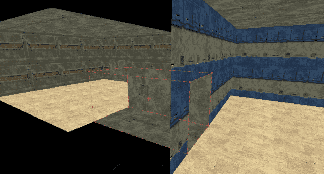
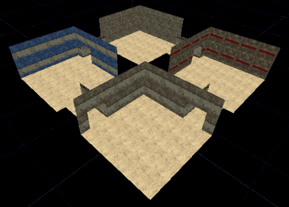

Creating DM-Quadroid/CreateTheCorridors
Tutorial: DM-Quadroid for UT – Building the Corridors
In this part of the tutorial we are going to join our four rooms with four corridors. In order to keep things simple we'll make the corridors all the same (although you can texture them differently if you like). In this part of the tutorial you will cover the following
- How to change the red builder brush into a cube of a specified size.
- How to create a corridor using the "subtract" operation (see CSG for more information).
- How to apply basic texturing.
- Rebuild the geometry in the level.
Before you Start
Before you start please make sure you have completed the following steps:
- Looked at the Toolbox page so you are familiar with the icons on the left hand side of the editor.
- Completed the first part of this tutorial [Creating Dm-Quadroid/CreateTheRooms]?.
- Opened the Unreal Editor and loaded the saved level.
A Quick Recap
At this stage of the tutorial we have created four rooms of equal size and textured them. We haven't added any lights or player start positions yet so the level is not playable.
Building the Rooms
Step 1: Create a corridor shape
- The first thing to do is make the red builder brush the right size. Right click on the "Cube" icon (insert cube icon here) in the tool box, and enter the values 256, 512, 256 for the height, width, and breadth respectively, and press the build button. This will give us our top/bottom corridor shape.
You will see the size and shape of the red builder brush change to the dimensions you have just specified. Remember that the brush won't change shape until you actually press the build button. Now press the Close button to get rid of the "Cube" properties window.
- Using Shift + the Left mouse button move your red builder brush such that it is positioned as shown below.

Step 2: Make the top/bottom corridors
- Subtract the corridor shape from the world. Repeat the process on the other side of the level so the two unconnected halves of your map are symmetrical.
You will have created two corridors. You will notice that the textures lining the floor, walls, and ceiling of the corridor are textured using the last texture you selected, or, the default texture. You will also find that your corridors do not lie flush with the floor if you never changed the height of the red builder brush when making them. Players would never be able to jump high enough to get into them. Don't worry - we'll fix that in a moment.
Step 3: Create the left right corridors
- Now we need to create the left/right corridor shape. You can either go back to the "Cube" properties window and enter the values 256, 512 for the width and breadth respectively, or, you can rotate the red builder brush by 90 degrees. Personally I prefer to avoid rotations as much as possible so I'd simply re-size the cube. However, you can rotate the "Cube" by ensuring that the "Rotate" icon insert pic here is selected, holding down the Ctrl + Left mouse button, and moving the mouse left or right until the brush is rotated by 90 degrees.
- Once you have created the left/right corridor shape move it into position such that it joins the two rooms.
- Once you have your left/right corridor shape in the right position subtract it. Make the lower half of the level a mirror image of the top half.
- Now texture your newly created corridors as you see fit. Remember, you can use Alt - Right click to make the texture of the surface clicked on the currently selected texture. And Alt - left click to apply the currently selected texture to a surface.
Your level should now look similar to the one shown below, albeit with texture differences.

If you changed the height of your red builder brush when making the corridors then you can skip this step. If you didn't then read on.
Step 4: Fix the height of the corridors
- Right then, now to fix the height of those corridors. Players within the map cannot hope to travel between the different rooms without using the hammer jump - the floors of the corridors are way to high. In order to fix this we need to select all of our corridor brushes (or cubes if you prefer) and move them down slightly.
- Before we start, make sure the red builder brush is not covering any of your corridor brushes (or cubes). Simply move it out of the way.
- Holding down the control key, left click on each of the corridor brushes (or cubes) displayed in the plan view of the map (top left if you are using the default views). You should see them all highlight as you click on them.
- If you now click once in the front view window you will see the brushes highlight themselves. Changes to objects within the different views only get updated when the view is selected.
- Holding down the Shift key and the Left mouse button, drag the mouse down. You will see all of the brushes move down with the drag. Once they are level with the floor let go of the Left mouse button and Left click on each of the views.
Hang on a minute! All of the views bar the 3D one are showing the corridors in the correct place, flush with the floor. The 3D view still shows them raised from the floor. This is because the 3D view shows the geometry as it was last built. Direct adds and subtracts affect the build of the geometry, but moves don't. Lets fix that now.
- Click on the "Build Geometry" icon (insert pic here) on the toolbar, or use "Build → Rebuild Geometry Only" from the menu.
You'll now see the 3D view update itself and display the corridors flush with the floor.
That's It
Well done. You've managed to complete the second part of the tutorial. Hopefully you'll be looking at a four room map with corridors joining the rooms. The corridors should be flush with the floor and the map should be textured nicely in the textures of your choice. Even though we have done all this we still haven't got a level that we can play around in.
At this point it's worth saving the map again. Use the File → Save to save the level over the top of your previous version. You can save it under a different name if you like. Remember the UnrealEd Goblin likes to crash the editor on the regular basis so save little and often if you are planning on doing a lot of work in the editor.
You are now ready to move on to Creating DM-Quadroid/AddLights, and add some lights to the map. At least then we'll be able to see where we are going. See you there.